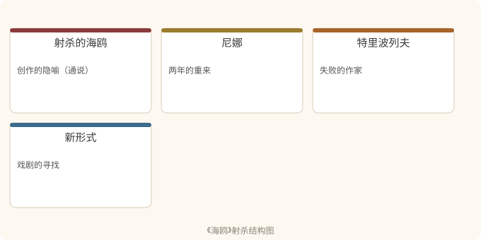

海鸥
一、基本信息
| 作者 | 安东·契诃夫 |
|---|---|
| 成书/出版 | 1896年首演（通说待核；作者页 B270 存目：'Notable Works'——The Seagull；1898年莫斯科艺术剧院成功说通说待核） Anton Chekhov — Encyclopaedia Britannica（百科全书） |
| 国别/地区 | 俄国 |
| 时代 | 近代 · 19世纪末 |
| 体裁 | 四幕喜剧 |
| 语言 | 俄语 |

《海鸥》射杀结构图（主题·结构图）
二、创作背景
作者页（B270）：契诃夫 major works 存目含'The Seagull'（B270 作者页定位）。
契诃夫原则（B270）：'Chekhov's gun'与'what is left unsaid seems much more important than what is said'。
1898年莫斯科艺术剧院复排成功（Britannica 相关问答提及——通说待核）。
三、内容脉络
尼娜与特里波列夫：新戏剧的失败与'海鸥'的射杀（通说待核）。
两年后：尼娜的重来与特里波列夫的自尽（通说待核）。
四、主要人物表
| 人物 | 身份 | 说明 |
|---|---|---|
| 尼娜 | 少女演员 | 海鸥的化身（通说待核） |
| 特里波列夫 | 青年作家 | （通说待核） |
| 阿尔卡基娜 | 名演员 | 母亲（通说待核） |
五、主题与艺术特点
- 新形式的失败与坚持（通说待核）。
- 海鸥的象征：射杀与重生（通说待核）。
- '潜台词'的戏剧（B270 语境）。
六、影响与评论
- 作者页：契诃夫 Notable Works 存目（B270）。
Anton Chekhov — Encyclopaedia Britannica（百科全书） - 作者页：'Chekhov's gun'与未说出之重（B270）。
Anton Chekhov — Encyclopaedia Britannica（百科全书）
七、阅读建议
难点
- '潜台词'的表演法。
- 莫斯科艺术剧院史。
- 《海鸥》（人民文学出版社《契诃夫戏剧集》，通说待核）。
- 俄文原版（公有领域）。
契诃夫戏剧四部之首。
八、待核实
- 1896年彼得堡首演失败说核对。
- 1898年莫斯科艺术剧院复排说核对。
- 尼娜/特里波列夫人名核对。
本页主要来源
安东·契诃夫的其他收录作品：樱桃园